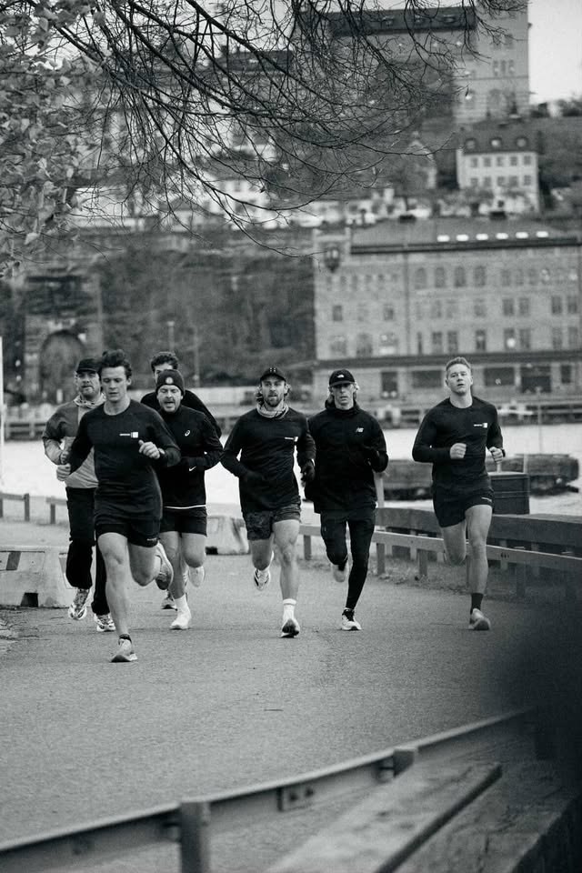
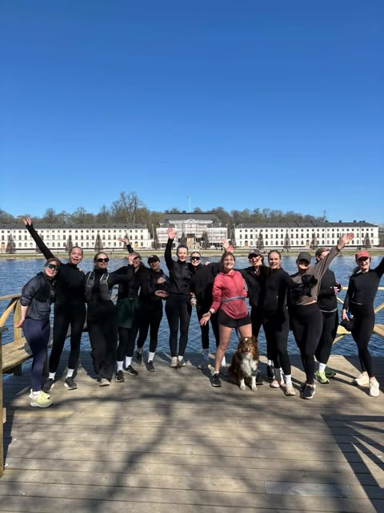

Run Clubs i
Stockholm
Här hittar du alla run clubs i Stockholm — välj nivå, typ och dag för att hitta din perfekta klubb.
23
Klubbar
7
Stadsdelar
6
Dagar/vecka
Nivå
Typ
Dag
Alla klubbar i Stockholm

Yo Running Club
En av Stockholms mest populära löparklubbar. Tränar i Vasastan med ett välkomnande och energigivande community.
Uppdaterad 2026-04-19

Stockholm Run Club
Grundades 2020 med målet att göra löpning tillgängligt för alla — gratis, inkluderande och på engelska.
Uppdaterad 2026-04-19

Dopest Runners
Grundades 2021 med målet att göra löpning rolig och inkluderande för alla. Bag drop på varje pass.
Uppdaterad 2026-04-19

RTC
Exklusivt sports club, gym och löpargrupp. Intervaller, långpass och "trains hard & races everywhere".
Uppdaterad 2026-04-19
T
Triple Threshold
Triple Threshold RC
Running communion på Södermalm — grundad som reaktion på att långpass ensam är tråkigt.
Uppdaterad 2026-04-19

Burgers 'N' Brew Run Crew
"We run hard, we eat harder." Tuffa löppass som belönas med öl och burgare. Anordnar också träningsresor.
Uppdaterad 2026-04-19

Running Around Club
Social löparklubb som ses på olika platser runt om i Stockholm. Varje vecka en ny mötesplats — kolla deras sociala medier för aktuell info.
Z
ZLK — Zinken Löpklub…
ZLK — Zinken Löpklubb
"Sveriges troligtvis gladaste löpklubb". Varierad träning — ibland långpass, ibland intervaller. Slutar ofta med mat och dryck.
Uppdaterad 2026-04-19

Söderlöparna Stockholm
Lugn 1,5–2 h runda på lördagar. Mysigt fikagäng efter passet.
Uppdaterad 2026-04-19
R
Runday
Runday
Löpargrupp för både nybörjare och vana löpare. Fokus på intervaller och tröskelpass.
Uppdaterad 2026-04-19
R
Run Collective Stock…
Run Collective Stockholm
Stockholmsbaserad löpargrupp sedan 2022 — springer för att "upptäcka Stockholm och resten av världen tillsammans". Passen avslutas med socialt häng.
Uppdaterad 2026-04-19
M
Mikkeller
Mikkeller Running Club
Globalt löparcommunity som delar passion för öl, kamratskap och äventyr. Alla välkomna — ingen löparvana krävs.
Uppdaterad 2026-04-19
M
Mellqvist
Mellqvist Run Club
Nystartad löpargrupp som kretsar kring Mellqvist, frukost och löpning — med bland det bästa kaffet i stan.
Uppdaterad 2026-04-19
S
Slowrunners Sthlm
Slowrunners Sthlm
Löpargrupp för dig som vill springa långsamt. Alla välkomna, oavsett nivå. Finns även i Göteborg.
Uppdaterad 2026-04-19

Svedjans Löpsällskap
Löparsällskapet som gillar bullar och att springa. Bra sällskap och magiska bakverk — alla välkomna.
Uppdaterad 2026-04-19

&morerunning
Nystartad löpargrupp för tjejer — alla nivåer välkomna.
Uppdaterad 2026-04-19
Löpning för tjejer
Facebook-grupp för tjejer i Stockholm som vill hitta sällskap på sin nästa löparrunda.
Uppdaterad 2026-04-19
H
Högdalen
Högdalen Run Club
Lokal löpargrupp som välkomnar alla — från den som precis börjat springa till den som vill hjälpa andra igång.
Uppdaterad 2026-04-19

Pulse Pacers
Löpargrupp som alltid springer 5 km i varierat tempo. Samarbetar med varumärken och restauranger. Socialt häng efter passet.
Uppdaterad 2026-04-19
S
Solemates
Solemates Runclub
Löpargrupp för alla nivåer — både nybörjare och erfarna. Uppmuntrar till att lära av varandra och inspireras.
Uppdaterad 2026-04-19
Inga klubbar matchar dina filter. Prova att ta bort ett filter.
Saknas din klubb?
Lägg till din
run club
Vill du att din klubb ska finnas med på Swedish Run Clubs? Eller vill du uppdatera information om en befintlig klubb? Hör av dig till oss!